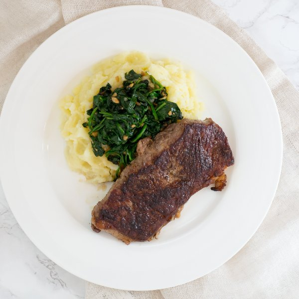

Striploin Steak with Mashed Potatoes & Garlicky Spinach Sauté

Nutrition (per serving)
590 kcalCalories
40.9 gProtein
36.1 gCarbs
32.3 gFat
Full nutrition table
| Calories | 590 kcal |
| Total fat | 32.3 g |
| Saturated fat | 16.4 g |
| Trans fat | 1.6 g |
| Cholesterol | 119 mg |
| Sodium | 139.5 mg |
| Carbohydrates | 36.1 g |
| Fiber | 6.1 g |
| Sugars | 2.6 g |
| Protein | 40.9 g |
| Potassium | 1509.3 mg |
| Calcium | 91.9 mg |
| Iron | 5.4 mg |
| Vitamin A | 47.6 IU |
| Vitamin C | 30.3 mg |
| Vitamin D | 11.1 IU |
Cookware
Ingredients
- 1 (5 oz) pkgbaby spinach
- 4 clovesgarlic
- 1 ½ lbstriploin (New York strip) steak
- 4 mediumyellow potatoes
- black pepper
- butter, unsalted
- salt
- virgin coconut oil
Steps
- Wash and dry the fresh produce. (Skip the spinach if it came pre-washed.)4 medium yellow potatoes
1 (5 oz) pkg baby spinach - Peel and quarter the potatoes lengthwise (into wedges); transfer to a medium saucepan. Cover with hot water (from the tap) by about 1 inch and bring to a boil over high heat.
- Preheat a skillet over medium-high heat.
- While the skillet heats up, pat the steak dry with paper towels and place on a plate; season generously with salt and pepper on both sides.1 ½ lb striploin (New York strip) steak
1 tsp salt
½ tsp black pepper - Once the skillet is hot, add coconut oil and swirl to coat the bottom.1 tbsp virgin coconut oil
- Carefully place the steak in the skillet; flipping every 15 to 30 seconds, cook the steak until desired doneness (5 to 7 minutes for medium-rare). (Use a thermometer or cut into the steak to check the doneness.) Once done, transfer the steak to a plate, leaving any juices in the skillet, and let it rest for 5 to 10 minutes.
- Once the water in the saucepan is boiling, reduce the heat to medium and cook until the potatoes are tender when pierced with a knife, 8 to 12 minutes. Once done, reserve about 1 cup of liquid and drain the rest. Cover the saucepan to keep warm.
- Trim off and discard the root ends of the garlic; peel and mince or press the garlic.4 cloves garlic
- Once the steak has been transferred, reduce the heat to medium and add the garlic and spinach to the skillet; season with salt and pepper. Stir until the spinach is just wilted, 1 to 2 minutes, then remove from the heat.½ tsp salt
¼ tsp black pepper - Add ½ of the reserved liquid, butter, salt, and pepper to the potatoes; mash with a potato masher until smooth. Add more liquid to thin out the mash if needed.2 tbsp butter, unsalted
½ tsp salt
¼ tsp black pepper - To serve, divide the mashed potatoes between plates and top with the spinach sauté, then add the steak on the side. Enjoy!